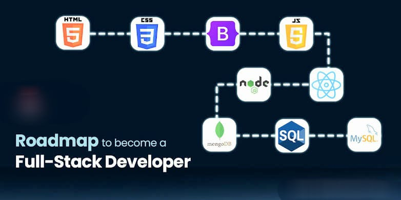
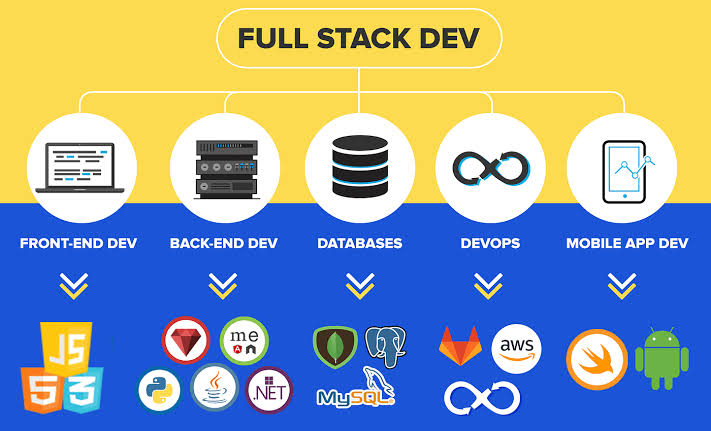

RESOURCES
Unlock Your Web Development Journey
Welcome to your one-stop destination for all things web development! Whether you're a beginner or an aspiring full-stack developer, we've gathered the best resources to help you level up your skills and build amazing projects. Explore the world of web development with tutorials, books, courses, roadmaps, and motivational materials designed to keep you inspired and on track.
Best Resources to Kickstart Your Web Development Adventure
Interactive Tutorials
Dive into hands-on interactive tutorials where you can learn by doing! These resources are perfect for those who learn best through practice. From HTML and CSS to advanced JavaScript and frameworks, these tutorials are designed to get you coding in no time.
- FreeCodeCamp: A community-driven platform that offers a complete full-stack curriculum. You'll be guided through coding challenges and projects that make learning fun and rewarding.
- MDN Web Docs: The most trusted resource for web developers. It provides clear, in-depth documentation on HTML, CSS, JavaScript, and much more. Think of it as your digital coding Bible.
- W3Schools: A beginner-friendly site where you can easily follow tutorials and try interactive examples directly in the browser.
Books That Will Shape You into a Web Developer
If you are a fan of reading, we have got you covered! These books will guide you through the fundamentals and provide advanced insights into web development. Whether you're focusing on front-end or back-end, these books are packed with invaluable knowledge.
- "Eloquent JavaScript": Dive deep into JavaScript with this book. It's perfect for those who want to explore advanced concepts and create complex applications.
- "You Don’t Know JS": Get to know JavaScript like never before. This book goes beyond the basics to cover the intricate details of JavaScript.
- "HTML and CSS: Design and Build Websites": This visual guide is a great introduction to web design, teaching you how to create stunning websites with beautiful layouts.
Video Playlists for Visual Learners
Some people learn best through videos, and we've got just the playlists for you! Explore these YouTube series and dive deep into real-world web development concepts.
- Traversy Media: Brad Traversy’s channel is one of the best places to start learning web development. With clear explanations and in-depth tutorials, Brad covers everything from front-end to back-end technologies.
- The Net Ninja: If you're looking to master JavaScript, React, Node.js, or other tools, The Net Ninja offers easy-to-follow tutorials with a fun teaching style.
- Academind: Max Schwarzmüller’s channel is perfect for those who want to get their hands dirty with frameworks like React, Vue, Angular, and more. Learn through real-life projects.
ROADMAP
A roadmap to becoming a full-stack developer involves gaining proficiency in both front-end (client-side) and back-end (server-side) technologies, along with understanding the full development process, including deployment, version control, and collaboration practices. Here’s a step-by-step description of the roadmap.Becoming a full-stack developer is an exciting and rewarding journey. A full-stack developer is someone who is capable of developing both the front-end (client-side) and back-end (server-side) portions of a web application. This requires a deep understanding of several programming languages, frameworks, and tools. The journey can be broken down into several stages, each building upon the last. Here’s a detailed roadmap for aspiring full-stack developers, structured to guide you from the very basics to advanced concepts.
|  |
 |
- Understanding the Basics of Web Development:
- HTML:Learn the structure of web pages, understanding tags, elements, attributes, and forms.
- CSS: Master styling, layouts (Flexbox, Grid), responsive design (media queries), and frameworks like Bootstrap.
- JavaScript (JS): Grasp the fundamentals of JS, including variables, functions, loops, events, and DOM manipulation.
- Version Control System:
- GitLearn Git for version control. Understand branching, merging, commits, and using GitHub for hosting code repositories.
- Front-End Development:
- Advanced JavaScript:Learn ES6+ features like arrow functions, destructuring, promises, async/await, and modules.
- Frontend Frameworks and Libraries-
- React:Learn components, hooks, JSX, state management, and routing.
- Vue.js or Angular: Learn other front-end frameworks as alternatives to React.
- State Management:Get comfortable with state management libraries like Redux (for React) or Vuex (for Vue).
- CSS Preprocessors:Learn SASS or LESS for writing more maintainable CSS.
- Testing Front-End:Learn how to write unit tests for components using testing libraries like Jest or Mocha.
- Back-End Development:
- Programming Languages:Pick a back-end language to learn. Common choices include:
- Node.js (JavaScript)
- Python (Django, Flask)
- Ruby (Rails)
- Java (Spring Boot)
- PHP(Laravel)/li>
- Database Management
- SQL:Learn how to work with relational databases like MySQL or PostgreSQL.
- NoSQL: Understand databases like MongoDB for non-relational data.
- RESTful APIs: Learn to build APIs using Express.js (for Node.js), Flask (Python), or other relevant tools.
- Authentication & Authorization: Learn how to implement user authentication (JWT, OAuth2), and manage sessions and cookies./li>
- Understanding the Development Tools:
- IDE/Editor:Learn to use an Integrated Development Environment (IDE) like VS Code or Sublime Text efficiently.
- Task Runners & Build Tools:Understand tools like Webpack, Gulp, or Parcel to bundle and optimize assets.
- Package Managers: Master using npm or yarn for managing dependencies in JavaScript-based projects.
- Database Integration:
- Learn to interact with databases (both SQL and NoSQL) to store, query, and manipulate data.
- Use Object Relational Mapping (ORM) libraries like Sequelize (for Node.js), Django ORM (for Python), or ActiveRecord (for Ruby on Rails).
- DevOps & Deployment:
- Version Control Platforms: GitHub, GitLab, or Bitbucket for collaborative development and hosting repositories.
- CI/CD:Learn about continuous integration and continuous deployment tools like Jenkins, CircleCI, or GitHub Actions.
- Containerization: Familiarize yourself with Docker for containerizing applications.
- Deployment Platforms:Learn how to deploy web applications on platforms like Heroku, AWS, Google Cloud, or DigitalOcean.
- Web Servers:Understand web servers like Apache or Nginx for serving web applications.
- Testing & Debugging:
- Unit Testing:Write tests for individual components or functions using tools like Mocha, Jest, or Jasmine.
- Integration Testing: Test the interactions between various parts of your app.
- End-to-End (E2E) Testing: Use tools like Cypress or Selenium to automate testing of the entire application flow.
- Debugging: Learn debugging techniques in both browser (for front-end) and server (for back-end) environments.
- Soft Skills & Collaboration:
- Communication: Develop clear communication skills for collaborating with team members, product managers, and clients.
- Agile Development:Understand Agile methodologies like Scrum or Kanban for project management.
- Code Reviews:Participate in code reviews to learn best practices and improve your code quality.
- Advanced Topics (Optional):
- WebSockets:For real-time applications (e.g., chat, notifications).
- GraphQL: A modern alternative to REST APIs.
- Microservices:Learn about creating microservice architectures for scalable applications.
- Serverless Architectures: Use serverless platforms like AWS Lambda or Firebase to build applications without managing servers.
- Portfolio and Continuous Learning:
- Build Projects:Start building real-world projects like e-commerce sites, blogs, chat apps, or a personal portfolio.
- Open Source Contribution: Contribute to open-source projects to practice skills and gain experience.
- Stay UpdatedFollow blogs, take online courses, and attend meetups or conferences to stay up-to-date with emerging technologies.
Summary
Becoming a full-stack developer involves acquiring a wide range of skills, both front-end and back-end, along with tools for deployment, collaboration, and testing. By following this roadmap, you will gradually build expertise in creating both the client and server sides of web applications and get ready to tackle real-world full-stack development tasks.